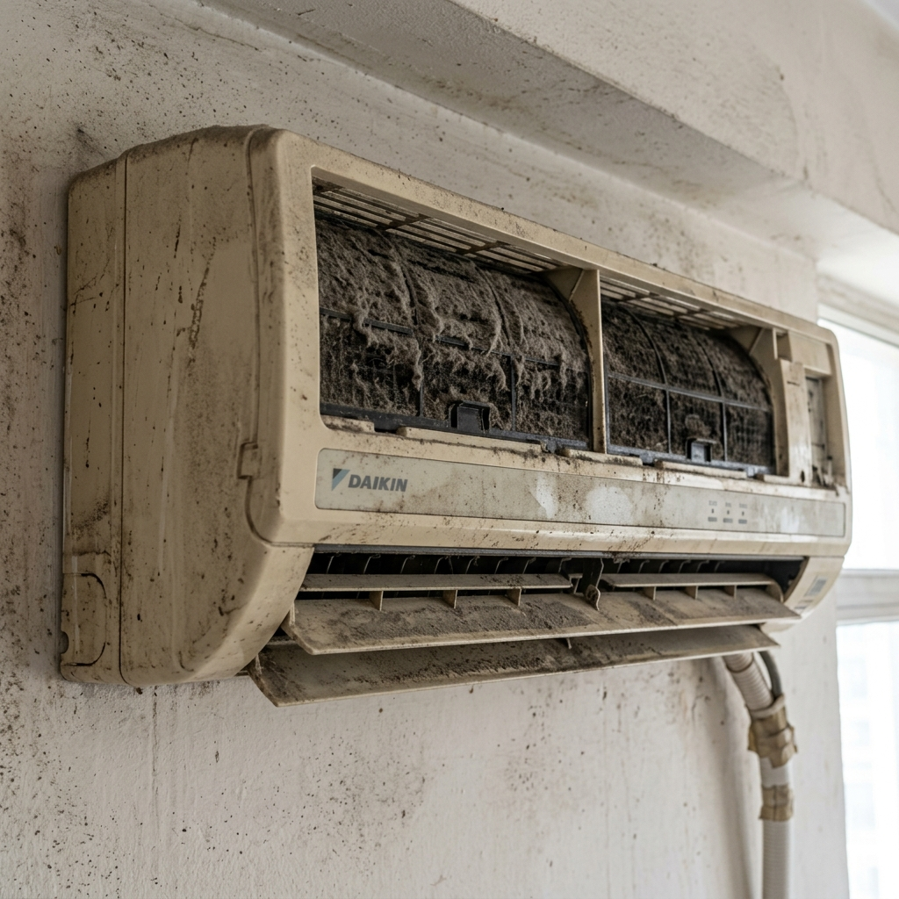

It's 100°F outside, your AC is running, and the air from the vents is disappointingly lukewarm. Before you panic-buy a new unit or pay for an unnecessary "gas refill," work through this framework — the same one our NATE-certified techs use on every weak-cooling call.
Step One: The Free Checks (15 Minutes, $0)
Roughly a third of "AC not cooling" calls end with one of these fixes:
- Check the mode. Sounds silly, but confirm it's on Cool, not Fan. Fan mode blows room-temperature air forever.
- Check the temperature setting. If it's set to 75°F and the room is 74°F, the compressor won't engage. Set it 5 degrees below room temp.
- Inspect the filters. Clogged filters choke airflow so severely that evaporator coils freeze solid — and frozen coils can't cool. Hold filters up to a light; if you can't see through them, wash or replace.
- Look at the outdoor unit. Is it running? Clear of leaves and debris? A dead outdoor unit means no cooling regardless of what the indoor blower does.
- Feel for ice. Ice on the copper pipes or indoor coil means restricted airflow or low refrigerant. Turn the unit off to thaw before running again.
The temperature-split test: place a thermometer at a supply vent and another at the return grille. A healthy AC shows an 8–12°C (14–22°F) difference. Less than 6°C means genuinely low cooling capacity — time for step two.
Step Two: Repairs That Make Sense
If the free checks don't restore cooling, here's what professional diagnosis typically finds, in order of frequency:
1. Dirty Coils Need a Deep Clean ($59 – $89)
Dust-caked condenser coils can't dump heat, so cooling capacity collapses. A proper jet-pump chemical wash restores most units to near-factory performance. This is the highest-value service in all of AC maintenance — we recommend it annually.
2. Failed Capacitor ($49 – $79)
The capacitor is the battery-like component that starts the compressor and fans. Texas summers kill them routinely. Symptom: the outdoor fan spins but the compressor never kicks in, or everything hums then stops. Cheap part, 30-minute fix.
3. Low Refrigerant — Find the Leak First ($89 – $249)
Here's where honesty matters: refrigerant doesn't deplete naturally. If pressures are low, there's a leak. Any technician who tops up gas without leak detection is selling you a repeat visit next summer. Proper repair: locate leak (electronic detector + nitrogen pressure test), repair it, vacuum, recharge to exact weight.
4. Control Board Faults ($119 – $189)
Inverter ACs rely on sophisticated PCBs that do fail — especially after power surges. Board-level diagnosis distinguishes a $20 relay replacement from a full board swap. Insist on technicians who actually test components rather than shotgun-replacing boards.
Step Three: The Replacement Math
Sometimes repair isn't the smart spend. Our honest thresholds:
| Situation | Our Advice |
|---|---|
| Compressor failure, unit under 8 years | Repair — often partially covered by warranty |
| Compressor failure, unit over 10 years | Replace — new units are 40% more efficient |
| Repair quote > 50% of new unit price | Replace |
| R22 refrigerant system (pre-2010) | Replace — R22 is phased out and absurdly priced |
| Frequent breakdowns (2+ per season) | Replace — reliability only declines from here |
A quality inverter split AC pays back its premium through electricity savings in 3–4 summers in hot climates. But a healthy 6-year-old unit needing a $90 capacitor has years of life left — don't let anyone talk you into replacing it.
The Pre-Summer Ritual That Prevents It All
Every April: wash or replace filters, hose down the outdoor unit fins gently, pour a cup of white vinegar into the drain line, and run a full cooling cycle while checking the temperature split. Fifteen minutes of prevention prevents roughly 80% of the mid-summer emergency calls we get.
Care+ members: your annual deep-clean and inspection covers all of this automatically. Members see 60% fewer emergency breakdowns than non-members.